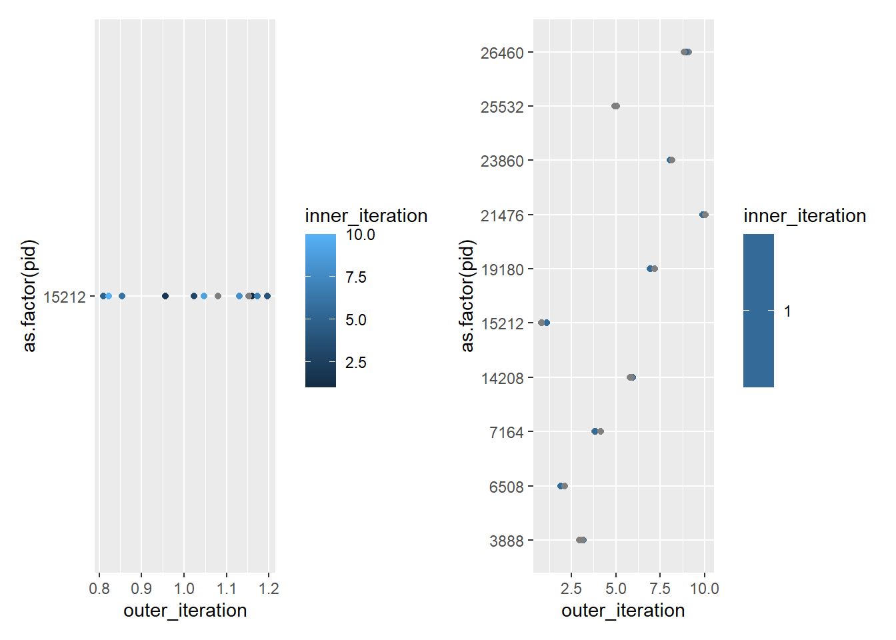
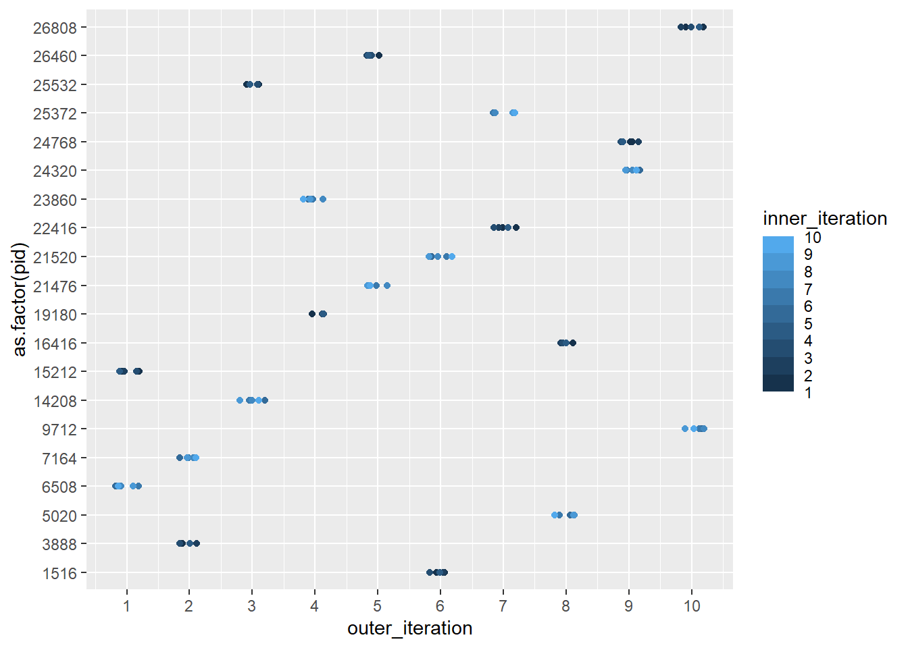
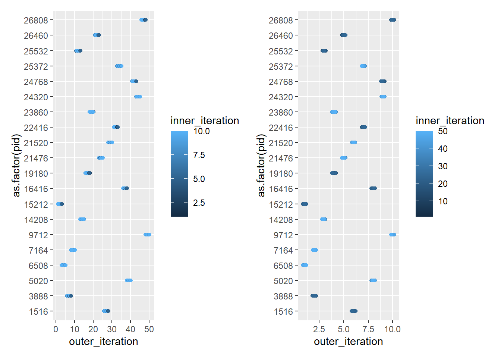

In testing parallel functions, especially on new machines, or if we’re trying to get a granular understanding of what they’re doing, we will want to do more than benchmark. We might, for example, want to know what cores and processes they’r using to make sure they’re taking full advantage of resources, or to better understand how resources get divided up, or to better understand the differences between plans.
I’ll use the {future} package, along with {dofuture} and {foreach}, because I tend to like writing for loops (there’s a reason I’ll try to write up sometime later). I test other packages in the {future} family (furrr, future_apply) where I try to better understand when they do and don’t give speed advantages.
library(microbenchmark)library(doFuture)
Loading required package: foreach
Loading required package: future
library(foreach)library(doRNG)
Loading required package: rngtools
library(ggplot2)library(dplyr)
Attaching package: 'dplyr'
The following objects are masked from 'package:stats':
filter, lag
The following objects are masked from 'package:base':
intersect, setdiff, setequal, union
I’ll use the inner and outer parallel functions similar to my tests of nested functions, but instead of doing anything, they’ll just track the processes.
What do I want to interrogate? The process id, for one- I can use Sys.getpid(). I think I might just skip all the actual processing and just get the IDs
What do I want to check? How the processes get divvied up. Are the inner loops getting different processes? Are the outer, and then the inner all use that one? Does it change through the outer loop? Does it depend on the number of iterations?
inner_par <-function(outer_it, size) { inner_out <-foreach(j =1:size,.combine = bind_rows) %dorng% { thisproc <-tibble(loop ="inner",outer_iteration = outer_it,inner_iteration = j, pid =Sys.getpid())# d <- rnorm(size, mean = j)# # f <- matrix(rnorm(size*size), nrow = size)# # g <- d %*% f# # mean(g) }}
For the outer loop, let’s check the PID both before and after the inner loop runs.
outer_par <-function(outer_size, innerfun, inner_size) { outer_out <-foreach(i =1:outer_size,.combine = bind_rows) %dorng% { outerpre <-tibble(loop ='outer_pre',outer_iteration = i,inner_iteration=NA,pid =Sys.getpid())# Now iterate over the values in c to do somethign else inner_out <-innerfun(outer_it = i, size = inner_size) outerpost <-tibble(loop ='outer_post',outer_iteration = i,inner_iteration=NA,pid =Sys.getpid())bind_rows(outerpre, inner_out, outerpost) }return(outer_out)}
plot1_10 <-ggplot(test1_10, aes(x = outer_iteration, y =as.factor(pid), color = inner_iteration)) +geom_point(position =position_jitter(width =0.2, height =0))plot10_1 <-ggplot(test10_1, aes(x = outer_iteration, y =as.factor(pid), color = inner_iteration)) +geom_point(position =position_jitter(width =0.2, height =0))plot1_10 + plot10_1

So yeah, it always only assigns PIDs to the outer. That means this sort of nested loop doesn’t actually nest- only the outer gets parallelised, at least with plan(multisession).
I’m assuming more iterations doesn’t change that, but let’s push both above the number of workers (20)
note- inner_par isn’t doing anything here, since it’s not a function anymore
testnest <-outer_nest(10, inner_par, 10)
ggplot(testnest, aes(x = outer_iteration, y =as.factor(pid), color = inner_iteration)) +geom_point(position =position_jitter(width =0.2, height =0)) +scale_x_continuous(breaks =0:10) +scale_color_binned(breaks =0:10)

Now, each outer loop is getting two PIDs to split up with its inner loop.
So that makes sense- this way foreach knows what’s coming and can split up workers. It looks like the outer loop is favored, though that shouldn’t matter when they’re specified this way.
plotnest50_10 <-ggplot(testnest50_10, aes(x = outer_iteration, y =as.factor(pid), color = inner_iteration)) +geom_point(position =position_jitter(width =0.2, height =0))plotnest10_50 <-ggplot(testnest10_50, aes(x = outer_iteration, y =as.factor(pid), color = inner_iteration)) +geom_point(position =position_jitter(width =0.2, height =0))plotnest50_10 + plotnest10_50

Those look more similar than they are because of different axes. I think that is giving more PIDs to the outer when it has more iterations.
List-plans
Naive- just defaults
There is information out there, largely related to using future.batchtools, that a list of plans lets us handle nested futures. Does that work with multisession?
plan("list") tells us what the plan is. This is super helpful for checking what’s going on.
And the situation where nesting makes the most sense (nodes with cores) lend themselves to list-plans with future.batchtools and worker control internally. I think.
BUT, need to be careful- we could be wasting workers if we parallelise over an outer layer with fewer jobs than workers- those ‘extra’ workers won’t be used by inner parallel loops
above, where I had outer_size = 10, I got 10 PIDs, even though I have 20 cores available.
It’s unclear how this works with more complex situations (e.g. on an HPC with nodes and workers)-
will the outer layer grab nodes and inner layer workers? Or do we need to manually manage that by using job arrays? I think the answer is list-plans and treating the loop over batchtools as essentially an array-job, just managed by R not slurm. But that needs to be tested.
I guess the good thing is the internal foreach isn’t hurting anything, except that a well-written forwould be faster.
So where we have control of things, need to test with and without foreaches in deep functions.
It would sure be nice if deep parallel foreaches that are getting their parallelisation skipped worked as fast as for, or even as fast as a sequential foreach %do%
Interpreting the nested speed results
In my testing of speed of nested functions, parallelising the inner loop was always slow. That can’t always be because the parallelisation is getting skipped- it would happen when the outer loop was sequential- but it suggests that the parallelisation is actually making things worse, even when it gets skipped.
As a test, we can combine the return values I use here with those functions to do the same processing but return the pids instead of the values to confirm when those inner loops actually get run in parallel.
Functions
These do the same processing as in my tests of nested speed, but return a tibble of pids instead.
Inner loop
Parallel version
inner_par <-function(in_vec, size, outer_it) { inner_out <-foreach(j = in_vec,.combine = bind_rows) %dorng% { d <-rnorm(size, mean = j) f <-matrix(rnorm(size*size), nrow = size) g <- d %*% f h <-mean(g) thisproc <-tibble(loop ="inner",outer_iteration = outer_it,inner_iteration = j, pid =Sys.getpid()) }return(inner_out)}
Sequential version
inner_seq <-function(in_vec, size, outer_it) { inner_out <-foreach(j = in_vec,.combine = bind_rows) %do% { d <-rnorm(size, mean = j) f <-matrix(rnorm(size*size), nrow = size) g <- d %*% f h <-mean(g) thisproc <-tibble(loop ="inner",outer_iteration = outer_it,inner_iteration = j, pid =Sys.getpid()) }return(inner_out)}
Using preallocated for
This is likely to be faster than the sequential. Preallocate both the vector and the new tibble output.
inner_for <-function(in_vec, size, outer_it) { inner_out <-vector(mode ='numeric', length = size) thisproc <-tibble(loop ="inner",outer_iteration = outer_it,inner_iteration =1:length(in_vec), pid =Sys.getpid())for(j in1:length(in_vec)) { d <-rnorm(size, mean = in_vec[j]) f <-matrix(rnorm(size*size), nrow = size) g <- d %*% f inner_out[j] <-mean(g) thisproc$pid[j] <-Sys.getpid() thisproc$inner_iteration[j] <- j }return(thisproc)}
Outer loop
I cant divide by inner_out now that it’s not a matrix, so just get a cv.
parallel
outer_par <-function(size, innerfun) { outer_out <-foreach(i =1:size,.combine = bind_rows) %dorng% {# Do a matrix mult on a vector specified with i a <-rnorm(size, mean = i) b <-matrix(rnorm(size*size), nrow = size) cvec <- a %*% b# Now iterate over the values in c to do somethign else inner_out <-innerfun(in_vec = cvec, size = size, outer_it = i) h <-sd(cvec)/mean(cvec) inner_out }return(outer_out)}
sequential
outer_seq <-function(size, innerfun) { outer_out <-foreach(i =1:size,.combine = bind_rows) %do% {# Do a matrix mult on a vector specified with i a <-rnorm(size, mean = i) b <-matrix(rnorm(size*size), nrow = size) cvec <- a %*% b# Now iterate over the values in c to do somethign else inner_out <-innerfun(in_vec = cvec, size = size, outer_it = i) h <-sd(cvec)/mean(cvec) inner_out }return(outer_out)}
Un-preallocated for
Because this would need to replace chnks in the tibble, it’s hard to preallocate. Just don’t bother- the point isn’t speed, it’s testing pids.
outer_for <-function(size, innerfun) { outer_out <-matrix(nrow = size, ncol = size) thisproc <-tibble(loop ="inner",outer_iteration =1,inner_iteration =1, pid =Sys.getpid(),.rows =0)for(i in1:size) {# Do a matrix mult on a vector specified with i a <-rnorm(size, mean = i) b <-matrix(rnorm(size*size), nrow = size) cvec <- a %*% b# Now iterate over the values in c to do somethign else inner_out <-innerfun(in_vec = cvec, size = size, outer_it = i) outer_out[, i] <-sd(cvec)/mean(cvec) thisproc <-bind_rows(thisproc, inner_out) } outer_out <-c(outer_out) return(thisproc)}
Checking PIDs
I’m less interested here in benchmarks, and more in how the PIDs get used.